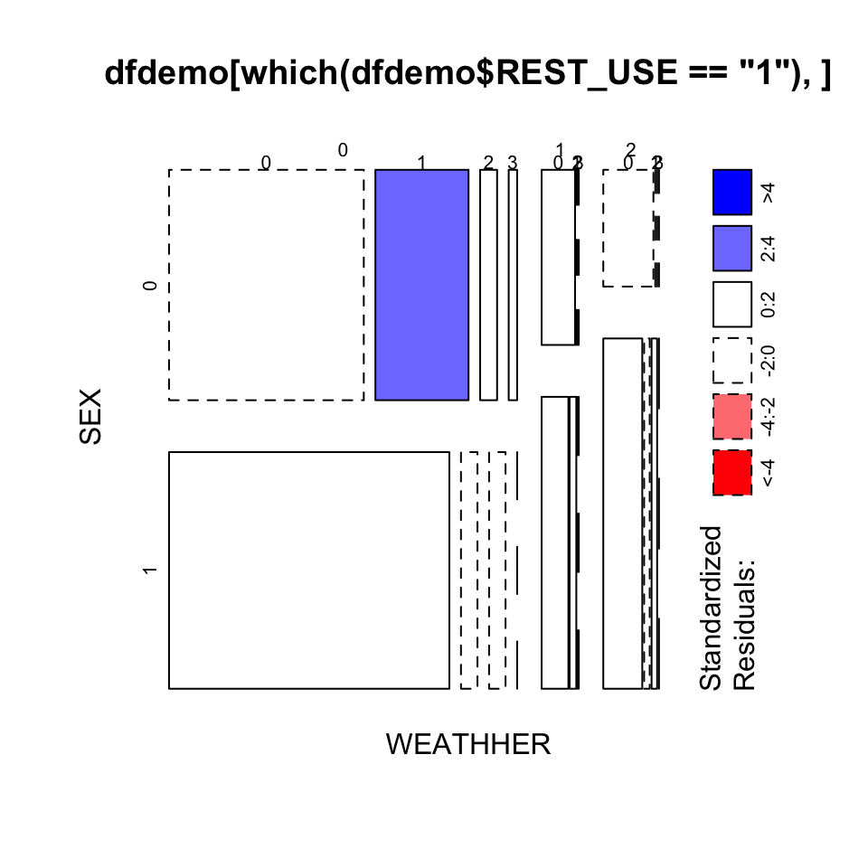
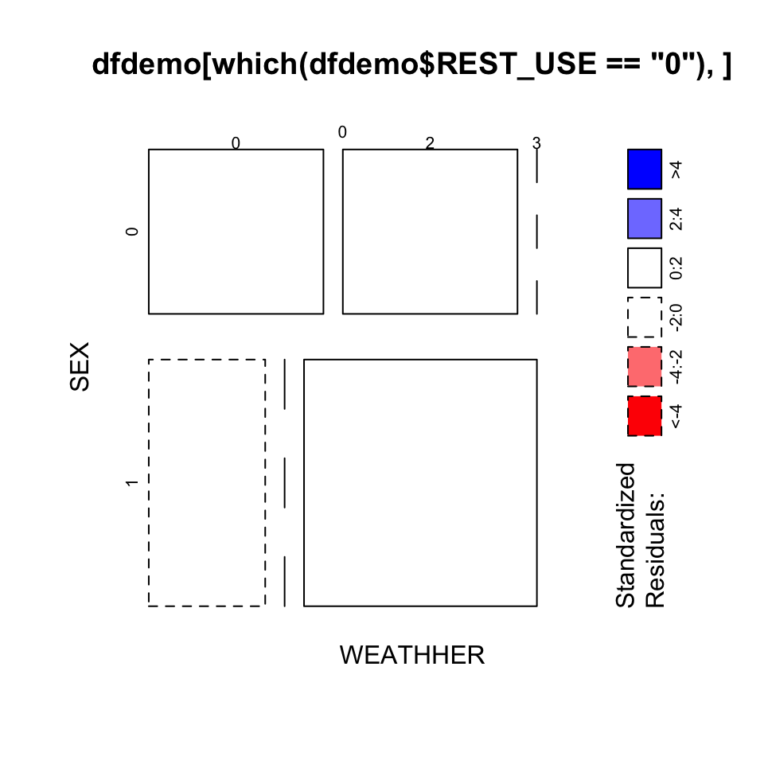

Hello, R markdow
2021-04-10
0.1 this is first time
knitr::opts_chunk$set(comment = "#", collapse = T,
fig.height = 5, fig.width = 5)library(tidyverse)
dfdemo <- read_csv("/Users/cpf/Documents/paper/R_programming/Rprocess/mydata/dfdemo.csv")
dfdemo_wide <-
head(dfdemo,5)dfdemo %>% #按驾驶员1和2计算对应受伤严重的驾驶员个数
group_by(VENO) %>%
count(INJ_SEV)
# # A tibble: 8 x 3
# # Groups: VENO [2]
# VENO INJ_SEV n
# <dbl> <dbl> <int>
# 1 1 0 40
# 2 1 1 6
# 3 1 2 3
# 4 1 3 1
# 5 2 0 36
# 6 2 1 9
# 7 2 2 3
# 8 2 3 2library(MASS)
#
# Attaching package: 'MASS'
# The following object is masked from 'package:dplyr':
#
# select
dfdemo1 <- dfdemo %>%
dplyr::mutate(
across(c(SEX,AGE1, REST_USE, WEATHHER,INJ_SEV), as.factor),
across(c(INJ_SEV), ~ fct_inseq(., ordered = TRUE))
)
fit1 <- polr(INJ_SEV ~ SEX + AGE1 + AGE + REST_USE + WEATHHER ,
data = dfdemo1,
method = c("logistic"))
summary(fit1)
#
# Re-fitting to get Hessian
# Call:
# polr(formula = INJ_SEV ~ SEX + AGE1 + AGE + REST_USE + WEATHHER,
# data = dfdemo1, method = c("logistic"))
#
# Coefficients:
# Value Std. Error t value
# SEX1 -0.63018 0.51054 -1.2344
# AGE11 -0.43892 0.84225 -0.5211
# AGE12 -2.26491 1.58141 -1.4322
# AGE13 -1.58207 2.56445 -0.6169
# AGE 0.05258 0.04785 1.0989
# REST_USE1 -2.82003 1.07006 -2.6354
# WEATHHER1 -0.78644 1.14229 -0.6885
# WEATHHER2 -0.49560 0.88679 -0.5589
#
# Intercepts:
# Value Std. Error t value
# 0|1 -0.7535 1.5554 -0.4844
# 1|2 0.6073 1.5582 0.3897
# 2|3 1.9818 1.5634 1.2677
#
# Residual Deviance: 136.8309
# AIC: 158.8309输出结果得到有序分类Logistic回归模型中截距和回归系数的最大似然估计值，确定回归方程为：
library(equatiomatic)
extract_eq(fit1, use_coefs = TRUE)
#
# Re-fitting to get Hessian
#
#
# Re-fitting to get Hessian\[ \begin{aligned} \log\left[ \frac { P( \operatorname{0} \geq \operatorname{1} ) }{ 1 - P( \operatorname{0} \geq \operatorname{1} ) } \right] &= -0.75 - 0.63(\operatorname{SEX}_{\operatorname{1}}) - 0.44(\operatorname{AGE1}_{\operatorname{1}} \times \operatorname{AGE}_{\operatorname{11}}) - 2.26(\operatorname{AGE1}_{\operatorname{2}} \times \operatorname{AGE}_{\operatorname{12}}) - 1.58(\operatorname{AGE1}_{\operatorname{3}} \times \operatorname{AGE}_{\operatorname{13}}) + 0.05(\operatorname{AGE}) - 2.82(\operatorname{REST\_USE}_{\operatorname{1}}) - 0.79(\operatorname{WEATHHER}_{\operatorname{1}}) - 0.5(\operatorname{WEATHHER}_{\operatorname{2}}) \\ \log\left[ \frac { P( \operatorname{1} \geq \operatorname{2} ) }{ 1 - P( \operatorname{1} \geq \operatorname{2} ) } \right] &= 0.61 - 0.63(\operatorname{SEX}_{\operatorname{1}}) - 0.44(\operatorname{AGE1}_{\operatorname{1}} \times \operatorname{AGE}_{\operatorname{11}}) - 2.26(\operatorname{AGE1}_{\operatorname{2}} \times \operatorname{AGE}_{\operatorname{12}}) - 1.58(\operatorname{AGE1}_{\operatorname{3}} \times \operatorname{AGE}_{\operatorname{13}}) + 0.05(\operatorname{AGE}) - 2.82(\operatorname{REST\_USE}_{\operatorname{1}}) - 0.79(\operatorname{WEATHHER}_{\operatorname{1}}) - 0.5(\operatorname{WEATHHER}_{\operatorname{2}}) \\ \log\left[ \frac { P( \operatorname{2} \geq \operatorname{3} ) }{ 1 - P( \operatorname{2} \geq \operatorname{3} ) } \right] &= 1.98 - 0.63(\operatorname{SEX}_{\operatorname{1}}) - 0.44(\operatorname{AGE1}_{\operatorname{1}} \times \operatorname{AGE}_{\operatorname{11}}) - 2.26(\operatorname{AGE1}_{\operatorname{2}} \times \operatorname{AGE}_{\operatorname{12}}) - 1.58(\operatorname{AGE1}_{\operatorname{3}} \times \operatorname{AGE}_{\operatorname{13}}) + 0.05(\operatorname{AGE}) - 2.82(\operatorname{REST\_USE}_{\operatorname{1}}) - 0.79(\operatorname{WEATHHER}_{\operatorname{1}}) - 0.5(\operatorname{WEATHHER}_{\operatorname{2}}) \end{aligned} \] ### 系数的解释（odds ratio OR）优势比
coef(fit1) %>% exp()
# SEX1 AGE11 AGE12 AGE13 AGE REST_USE1 WEATHHER1 WEATHHER2
# 0.53249348 0.64473487 0.10383922 0.20554929 1.05399100 0.05960394 0.45546231 0.60920642- SEX:在其它因素不变的情况下，男性要比女性会增加受伤严重程度向上提高一个级别的概率0.53倍，也就是减少了47%
- WEAHTER1:在其它因素不变的情况下，雨天受伤严重程度提高一个级别的概率比晴天减少55%。 ### 边际效应
library(margins)
me <- marginal_effects(fit1, variables = c("SEX", "AGE", "REST_USE", "WEATHHER"))
me %>% # 求每一个解释变量的平均边际效应
summarise(across(everything(), mean, na.rm = TRUE))
# dydx_AGE dydx_SEX1 dydx_REST_USE1 dydx_WEATHHER1 dydx_WEATHHER2
# 1 -0.008049877 0.09797588 0.560037 0.1074138 0.07248451##Logistic回归深度学习
library(mlr3verse)
library(nnet)0.1.1 划分训练集测试集
- 为了保持训练集、测试集的分类因变量数据具有相似的占比，采用分层 重抽样方法，需要设置任务的列角色的分层属性 staratum 为因变量
- 做留出 (holdout) 重抽样，80% 作为训练集，其余 20% 作为测试集
- 根据任务对重抽样做实例化，取出训练集索引和测试集索引
0.2 plot
mosaicplot(~ WEATHHER + SEX + INJ_SEV, data=dfdemo[which(dfdemo$REST_USE=="1"),], shade = TRUE, lengend = TRUE)
# Warning: In mosaicplot.default(table(mf), main = main, ...) :
# extra argument 'lengend' will be disregarded
mosaicplot(~ WEATHHER + SEX + INJ_SEV, data=dfdemo[which(dfdemo$REST_USE=="0"),], shade = TRUE, lengend = TRUE)
# Warning: In mosaicplot.default(table(mf), main = main, ...) :
# extra argument 'lengend' will be disregarded